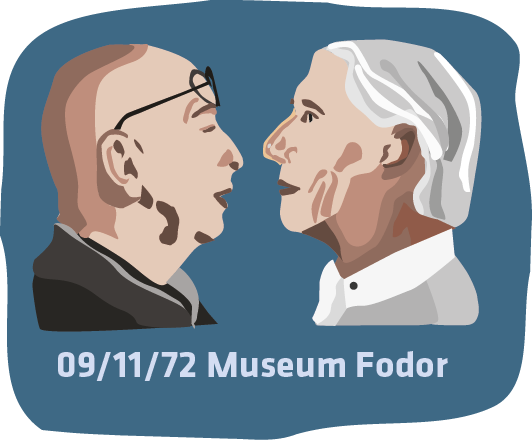
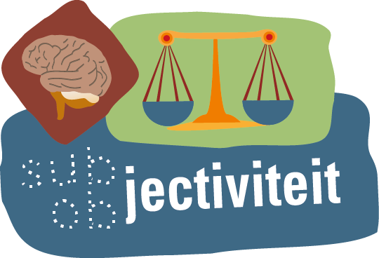

4. Is het wenselijk om als ontwerper te streven naar een status van objectiviteit of neutraliteit?
Het werk van ontwerpers versterkt of verandert reeds bestaande opvattingen. Als grafisch ontwerper speel je hier ook een actieve rol in en draag je ook een verantwoordelijkheid. Dat besef zou je in kunnen zetten in je werk. In dat geval ben je niet een vormgever van de informatie van anderen, maar dan is die informatie gecombineerd met een eigen visie, een onderdeel van de ‘communicatie’ waar je als ontwerper de regie over voert- of kunt voeren.. Voor ontwerpers vormt het wel- of niet gebruik maken van een eigen visie in grafisch ontwerp een belangrijk vraagstuk.

§4.1 Crouwel versus van Toorn,
09.11.72 Het debat
Op 9 November 1972 vond er een historisch debat tussen Wim Crouwel en Jan van Toorn in Museum Fodor plaats , waarin de vraag werd gesteld of grafisch ontwerpen een objectieve- of juist een subjectieve bezigheid is.
Het standpunt van Wim Crouwel was dat de ontwerper zich niet inhoudelijk moet bemoeien met de informatie die hij over-brengt, maar dat hij slechts een middelen levert waarmee deze informatie op een objectieve manier bij het juiste publiek afgeleverd kan worden. Hiervoor is volgens Crouwel grafisch ontwerp als ordeningsproces toepasbaar, elke vormgeving die meer wil zijn dan dat is volgens Crouwel overbodig. Gevoels-matig en intuïtief ontwerpen was voor Crowel uit den boze.
Jan van Toorn was, in tegenstelling tot de zakelijke en analytische Crouwel, een emotionele, maatschappijkritische ontwerper. Hij was overtuigd van het feit dat het voor een grafisch ontwerper noodzakelijk is om subjectief te zijn om de informatie op de juiste wijze door te geven.
Crouwel vond dat Van Toorn de neiging had om zich zo te verdiepen in de opdracht waarvoor hij ontwerpt, dat hij zich begaf op terreinen die niet de zijne waren. Volgens Crouwel is het gevaar daarvan dat dit uitdraait op een amateuristische bijdrage aan het werk van de klant. Van Toorn formuleerde zijn tegen-argument als volgt: ‘De grafisch ontwerper heeft een dubbelrol als overbrenger van informatie: zijn taak is enerzijds overdracht van inhoud, zonder daar in te grijpen, anderzijds heeft hij wel degelijk een niet te ontlopen inbreng.’
Volgens Crouwel is maatschappelijk engagement echter voor ontwerpers maar op een manier te belijden: door selectief te zijn in de keuze van een opdrachtgever. Crouwel brengt dit naar voren met het volgende argument: ‘subjectief ontwerpen betekent in z’n uiterste consequentie dat je alleen maar vormgeeft aan dat waar je helemaal achter staat, dat maakt de kans groot dat je maar een heel klein werkterrein hebt’.
Volgens van Toorn is er voor goede communicatie een sterke identiteit in een grafische uiting noodzakelijk. Hij zei hierover het volgende: ‘Crouwels angst voor subjectief ingrijpen leidt tot eenvormigheid, wardoor een sterke identiteit verloren gaat’.
Crouwel benadrukte als reactie hierop de noodzaak van consistentie in grafisch ontwerp. Crouwel: ‘Soms ben je als ontwerper genoodzaakt om consequent te blijven, ook als je weet dat iets mooier zou kunnen als je niet consequent zou zijn geweest’.
Van Toorn verdedigde zijn eigen standpunt met: ‘Bij jou zijn foto’s en tekstkolommen grijsvlakken. Jij geeft alleen vorm aan het instituut. Ik vind, wij vinden met elkaar, dat het instituut niet belangrijk is. Het contact tot stand brengen met het publiek van het instituut, dat is belangrijk!’
Op 2 november 2008 gingen Crouwel en Van Toorn opnieuw in debat voor een klein publiek. Dit keer was het niet meer zo intens als in ’72, dit had te maken met het feit dat Crouwel minder standvastigheid vertoonde in het pleiten voor objectiviteit binnen het ontwerpvak. Hij leek door de jaren heen gemerkt te hebben dat het streven naar objectiviteit toch minder toepasbaar was in grafisch ontwerp dan hij in ’72 dacht. De twee ontwerpers zijn in zekere zin nader tot elkaar gekomen. Toch zal deze discussie tussen Crouwel en van Toorn nooit volledig beslecht worden.

§4.2. De grafisch ontwerper als objectieve informatieverstrekker
Wanneer er wordt getracht objectief te zijn, beperkt men uiteindelijk het vermogen van het ontwerp om het eigen voorstellingsvermogen van de kijker te raken, hem of haar te bevrijden van voorgeschreven reacties. Om deze reden kies ik zelf de kant van Van Toorn. Ik ben van mening dat de subjec-tieve aanpak van een grafisch ontwerper een waardevolle bijdrage kan leveren aan de communicatie van een boodschap.
Voor ontwerpers is soms een zekere mate van ver-vreemding een voorwaarde voor een werkwijze die leidt naar zinvol ontwerp. Vervreemding is in dit geval het creëren van afstand tussen reeds bestaande opvattingen en de eigen visie. Hierdoor is het mogelijk om kritiek te leveren op de door de maatschappij gehanteerde waarden en normen. Dit is alleen mogelijk als er wordt afgeweken van gangbare, ‘objectieve’ denkpatronen. Daarvoor lijkt een subjectieve werkwijze noodzakelijk.
